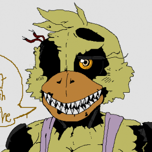

If you see any issues, please do make us aware via our Contact Form.
Thank you for browsing FNaFLore.com, we hope you enjoy the improvements that are coming to the site!
Golden Freddy!

Nightmares, Torture, and The Problem With Forced Debates
Author Links
I’m back.
It’s been a while since I last published any article about this horrid lovely bear game. Since my last article, Five Nights at Freddy’s: Help Wanted has released and continued the franchise even after the death of almost every major character in the series and has brought back the main villain once more for even more crazy rabbit-related hi-jinks.
My suffering is endless and the cycle of the bear game continues.
This however is not the point of today’s article. Instead, I have a different though vaguely related topic. Today, I want to discuss an issue that has lingered in the community for nearly three years now.
Today I am going to discuss the Nightmare animatronics, the debate around whether or not they exist, and the issue with Scott creating artificial debates. Let’s begin, shall we?
Nightmares
The Nightmare animatronics were, at first, rather straightforward. They were big, nasty, and quite frankly ugly (Sorry, Nightmare Chica). Given the aesthetic of the game, any player could easily understand that these monstrous mechanical menaces weren’t real and were merely figments of a scarred psyche. And for the longest time, that was the generally accepted theory. If you were to go ahead and say “Oh but what if the tooth bear was real?” you’d be seen as having lost your fucking mind. This changed over a year later on October 7th with the release of Five Nights at Freddy’s: Sister Location.
With the release of the fifth mainline installment in the Five Nights series, many players (initially) played through the game without noticing a single allusion or reference to the previous installment. However, players with keen eyes or a poor luck defending against large metal bears were able to notice a familiar location, or locations, rather, on the Breaker Room Map.
Thus began one of the worst periods in the fandom’s history
With the revelation of the Breaker Room Map, fan speculation went wild. What could it mean? Is Nightmare Fredbear real? Are they ALL real? How does Afton afford so many homes with a failing company? Fans went mad over the image, speculating that perhaps the dots simply marked cameras, lights, anything. This map seemingly flew in the face of FNaF 4, opening up a possibility that many previously scoffed at: The Nightmares could be real.
And then we found the Private Room, which helped quite literally no one.

Now on top of having the Nightmares seemingly mapped out, it would appear Afton himself has cameras installed into his son’s room, all connecting back to his remote underground clown bunker. This only furthered the discourse, driving home ideas that perhaps Afton orchestrated the entire event himself, torturing his son for whatever nefarious reason. Fans went into a frenzy, picking apart every little detail or nugget of info to try and understand what these large withered monsters really were.
And then we got a book which seemingly confirmed they were dreams once more.

Followed by two games that seemed to allude to both.


At this point, no one knows what exactly to think. Currently, fans are torn over what exactly the Nightmares are, if they’re real, or what any of the Breaker Map or minigames like Midnight Motorist even mean in regards to the issue. But this is only one facet of a major issue. That issue being:
Forced Debates
It’s at this point that it’s very apparent Scott wants these kinds of debates to exist. He’s made it very clear in the past and in the interview held with Dawko that he not only wants but actively enjoys these kinds of debates over the games. And up to a point, that is entirely fine. Having fun creating a mysterious story filled with vague details and obscure events to solved by adoring fans is entirely acceptable and I would love nothing more than to take part in solving that kind of mystery. Where it becomes a problem, however, is when these points of contention are over very major aspects of the lore. The state of the Nightmare animatronics ties into many key theories such as identifying who we play as in FNaF 4, who we play as in Ultimate Custom Night, and to an extent helps lead us to the identity of the Crying Child in FNaF 4.
Keeping major plot points like this secret only serves to stunt further investigation into the story and sows community discourse. Obviously, I don’t hold this against Scott himself. A good chunk lie with the community as well. Many community members desire to further obfuscate the lore by stretching it to further fit their view on the lore which is an entirely separate issue which could serve as a future article if I ever feel like gaining attention again.
My main desire in all of this is, ideally, for Scott to outright clarify his intentions with the Nightmares. As it stands, Scott has left too much conflicting evidence in the games that has made trying to solve this nigh on impossible. the only way this can be solved is if Scott outright states the answer OR if FNaF 9 (That is still such a surreal name to type) lends a hand to helping solve this mystery.
In conclusion, the debate over what exactly the Nightmares are is quite frankly an unfixable mess in its current state thanks to rabid fans, Scott’s love for creating debates, and the selfish desires of fans with very poorly structured headcanons. I hope that one day soon this entire debate can be put to rest and we can all agree on one thing.
Nightmare Chica got it going on.
